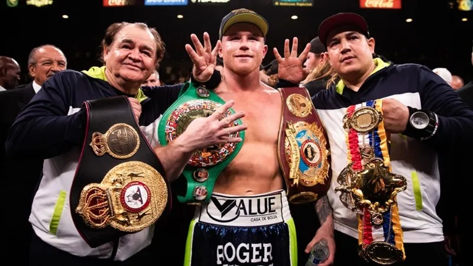

Melhor boxeador da atualidade
Saul "Canelo" Alvárez é um boxeador mexicano, conhecido por sua determinação e incrível habilidade de adatpação. Começou a praticar boxe aos 13 anos de idade, por influência de seus irmãos mais velhos, que eram boxeadores. O baixinho de 1.71, atuou com sucesso em diversas categorias de peso, consolidando-se como o melhor boxeador da atualidade e um dos mais versáteis da história. Seu cartel profissional é invejavél, composto por 58 vitórias, 2 derrotas e 2 empates. As principais caraterísticas de seu boxe ortodoxo são a grande qualidade dos seus movimentos de cabeça para defesa, contra-ataques com um timing impecável e seus ganchos no corpo (liver shot).
Unificação dos 4 cinturões Super Middleweight
🏆 Campeão Indiscutível dos Supermédios (único da história);
🏆 Campeão em 4 categorias diferentes (Meio-Médio, Super Meio-Médio, Médio, Supermédio e Meio-Pesado);
🏆 Prêmio "Lutador do Ano" pela The Ring e ESPN (2019, 2021).